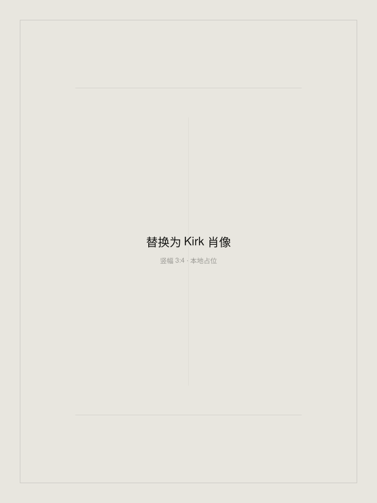

阅读与记忆 ESSAY / 01
我读的东西一样都没记住
我一直在往里装，从来没往外拿。关于知识、记忆与真正的输出。
6 分钟阅读 · 归档正文
一个人，一间开放的工坊
思考、建造，
也去远方。
金融业务实践者 / AI 系统建造者 / 写作者
我在现实的金融业务里做判断，也把反复出现的摩擦建造成工具。工作之外，我用写作与远行理解自己。

01 / THE STUDY
关于阅读、工作，以及我在使用 AI 时的思考。两篇归档文章，已经可以在这里读完。
02 / THE WORKSHOP
从自己的日常需要出发，把有用的系统和方法逐步整理出来。
03 / OPEN NOTES
从一个日常问题开始。三份可阅读、可下载的入门清单，帮你试出适合自己的工作方式。
04 / FIELD JOURNAL
离开熟悉的地方，再回头看看自己的生活。这里先放下线索，真实照片与游记慢慢补齐。
05 / THE LIVING ROOM
长期在金融业务一线，处理有现实后果的判断与交付。
正在把私人系统提炼成
可以公开、复用的版本。
这里放我的文字、正在建造的东西，以及工作之外的生活。你可以先读一篇文章，或者带走一份小清单。
此站只代表我个人，与任何机构无关；不出现具体项目、客户与数据。